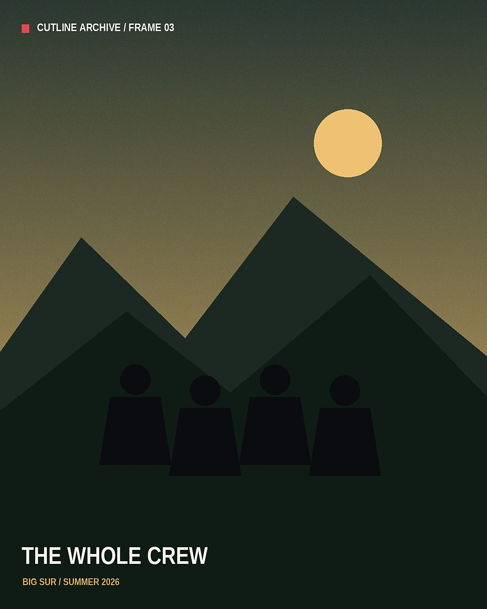

YOUR SECOND BRAIN, IN ORBIT
Notes that move at the speed of thought.
Orbit Notes turns scattered ideas into a living map of your work. Write, link, and rediscover the thinking that makes your projects yours.
Start mapping
THE CONSTELLATION VIEW
Every thought has a place.
See ideas form constellations as you write. Orbit's local-first graph surfaces the connection you forgot you made, without sending your notes to an advertising network.
4.8×
more of your forgotten ideas resurfaced each week.
BUILT FOR DEEP WORK
Fast on a plane. Private by default.
Your library lives on your device and syncs when you choose. Full-text search works offline, exports stay open, and your thinking remains portable forever.
THE MONDAY REVIEW
Finish the week knowing what moved.
A seven-minute review gathers the notes you touched, the ideas you linked, and the projects that need your next clear action.